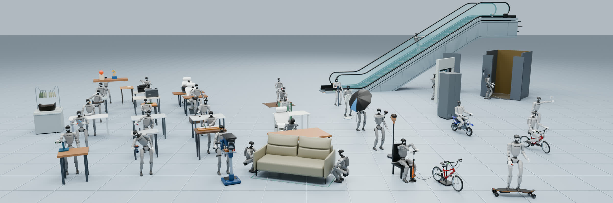
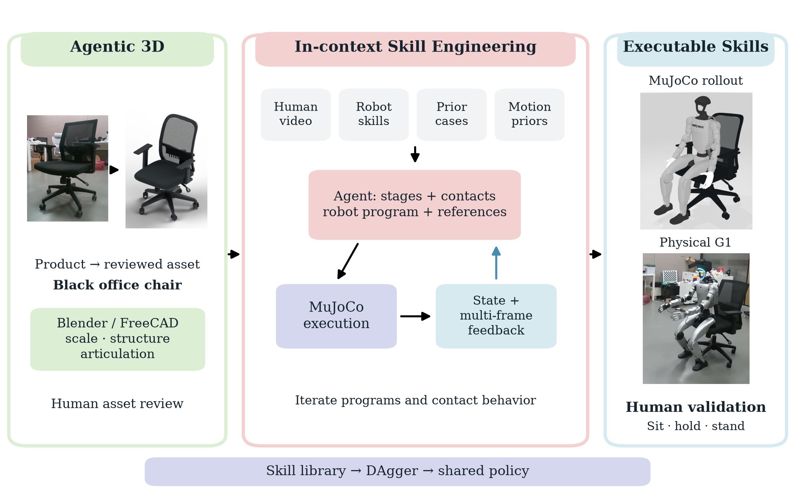
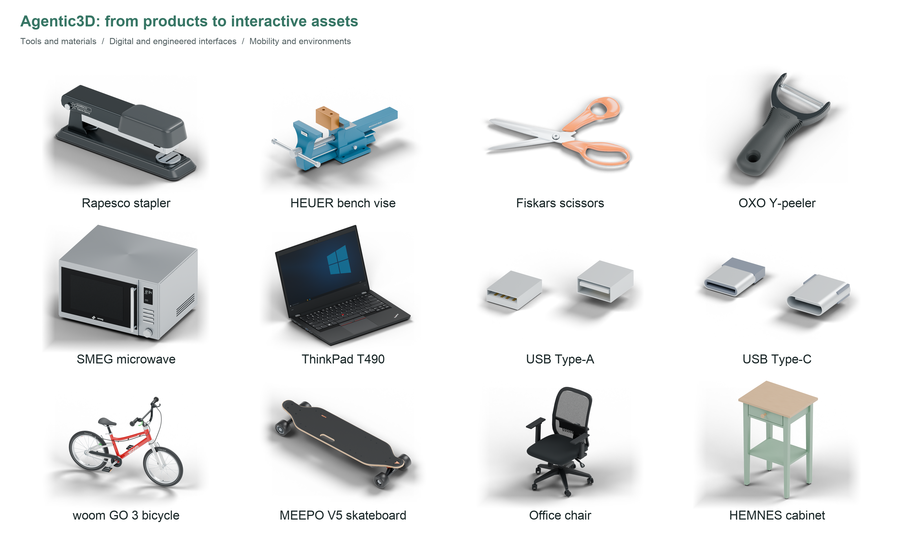
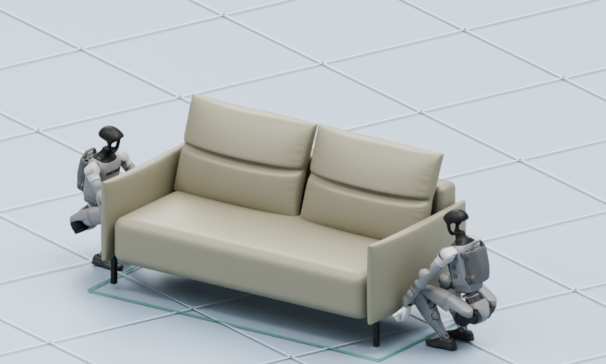

Agentic 3D
Product references and dimensions become reviewed metric assets in Blender and FreeCAD.
SpatialtemporalAI · Humanoid robotics
Agentic Skill Engineering for
Reality-Grounded Humanoid
Loco-Manipulation
A human video. An agent’s context.
A growing world of executable skills.
From intent to physical interaction
Ordinary human video becomes task context. Agents build robot-native programs, test them in physics, and refine them through multimodal feedback and human review.
From watching a human
to engineering a skill.
MOTIO brings human-action semantics, metric 3D assets, reusable robot skills, prior cases, and motion references into one agent context.
The agent reasons about stages and contacts, writes executable interactions, and learns from physical feedback—without task-specific teleoperation or robot demonstration collection.
01 / Physical G1 executions
G1 sits, draws, carries a bottle to the bin, and opens a door to transport a cart through the office.
G1 sits on a black office chair and rises to standing.
G1 grasps a bottle, carries it across the office, and places it in the bin.
G1 opens the door and guides a cart through the doorway.
G1 operates a mouse to draw on screen.
02 / A diverse skill library
Locomotion, dynamic balance, collaboration, mechanisms, tools, and deformable materials. Different interactions, one skill-engineering workflow.
Wrist motion launches and catches the ingredients.
Grasp the handle and pull the door open.
Physical key presses produce a drawing on screen.
Stabilize the cucumber and guide repeated cuts.
Coordinated contact and large-object transport.
Stepping, support, and handrail interaction.

03 / The method
Two connected stages turn reality-grounded assets and human action context into executable humanoid skills.
Product references and dimensions become reviewed metric assets in Blender and FreeCAD.
Human video, robot skills, prior cases, and motion priors guide staged programs and contact decisions.
MuJoCo execution, state measurements, and multi-frame visual feedback guide iteration and human validation.


Blender covers broad product modeling; FreeCAD supports dimensioned engineering interfaces. Human asset review connects geometry to the task.
04 / Interactive 3D
Explore the robots, objects, and contacts behind MOTIO’s skills. Orbit and zoom to inspect each robot–object configuration.

05 / Real2Sim2Real
A scanned office connects appearance and metric geometry to interactive simulation. Layout and object variation prepare the bottle-to-bin task for physical G1 execution.
Real office → interactive world
3D Gaussian splatting, metric point clouds, and a MuJoCo scene connect the room to skill development. RGB-D, LiDAR localization, and SAM3 support physical deployment.
06 / From engineered skills to a shared policy
Skill executions train one shared policy through BC/DAgger, without task-specific RL.
18tasks
One shared policy completes 18/18 tasks in development and 18/18 in repeat evaluation.
Reusable skill experience supports coordinated whole-body behavior across tasks.
Across 33 human-validated skills.
From task request to human validation.
Screw-tightening refinement: 269.44 → 64.58 μm.
MOTIO / Paper and resources
SpatialtemporalAI